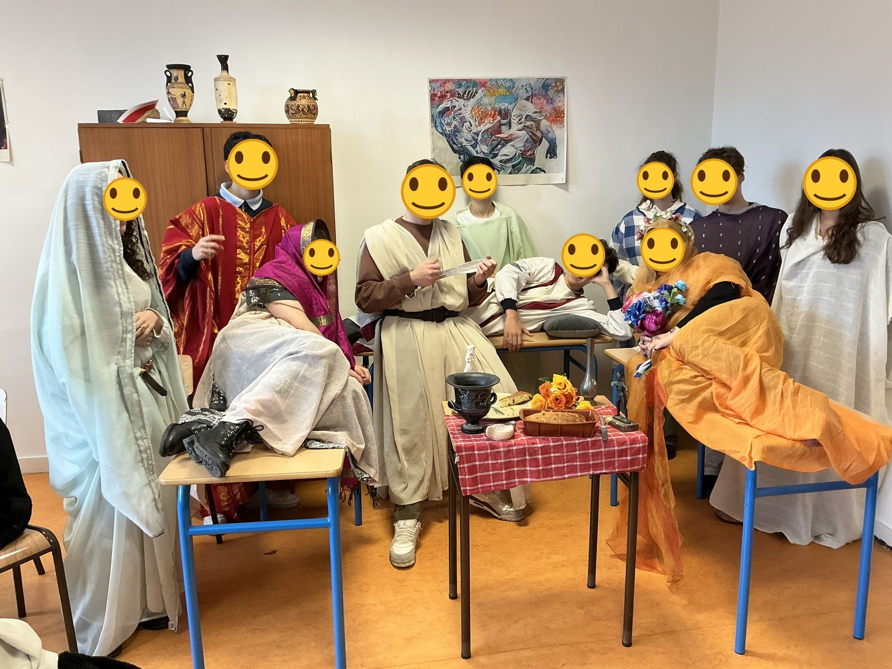

L'étude des langues et des cultures antiques, c'est bien plus qu'apprendre une langue. C'est un voyage dans un monde qui continue de façonner le nôtre.
Vous explorez les grandes idées des écrivains, philosophes et savants de l'Antiquité, tout en développant votre réflexion personnelle et votre curiosité intellectuelle. Il s'agit de voir le monde sous différents angles et d'apprendre à argumenter avec finesse.
Déchiffrer les termes techniques grâce à la maîtrise des racines grecques et latines.
Comprendre les mots, leur histoire, leur construction, et améliorer son orthographe et sa grammaire.
Le Latin et le Grec sont de merveilleux tremplins pour les langues vivantes.
Explorez l'univers de la tragédie, de la comédie, de la poésie, et du théâtre, là où tout a commencé.
Ces cours vous donneront des bases solides pour organiser vos idées et travailler efficacement.